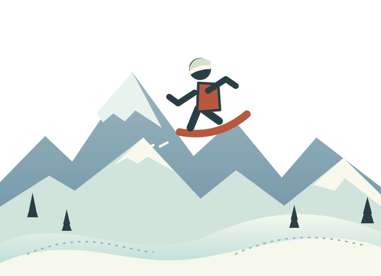

ELEVATION 9,000 FT / 06 RUNS OPEN
PICK
A RUN.
I'm Yves. I build things to find out how they work. Choose a run and see where it goes.

ELEVATION 9,000 FT / 06 RUNS OPEN
I'm Yves. I build things to find out how they work. Choose a run and see where it goes.